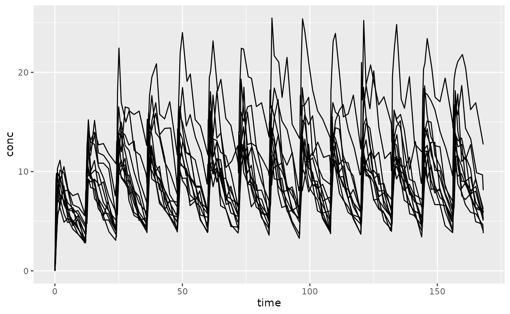

Noncompartmental evaluation of time to steady-state
Bill Denney
2025-05-06
Source:vignettes/v22-time-to-steady-state.Rmd
v22-time-to-steady-state.RmdTime to steady-state (TSS) can be estimated with PKNCA using either a monoexponential increase toward an asymptote or by a linear regression of the last points. According to Maganti (2008), the monoexponential method is preferred.
TSS can be estimated using either method using the
pk.tss() function in PKNCA.
Example
Data setup
Illustrating time to steady-state, the example from the superposition vignette will be used.
library(PKNCA)
theoph_corrected <- as.data.frame(datasets::Theoph)
theoph_corrected$conc[theoph_corrected$Time == 0] <- 0
conc_obj <- PKNCAconc(theoph_corrected, conc~Time|Subject)
steady_state <- superposition(conc_obj, dose.times = seq(0, 168 - 12, by=12), tau=168, n.tau=1)
# Add some noise to the data so that it seems more reasonable
steady_state_noise <- steady_state
steady_state_noise$conc <-
withr::with_seed(
seed = 5,
steady_state_noise$conc*exp(rnorm(nrow(steady_state_noise), mean = 0, sd = 0.1))
)Examine the data graphically.

Estimate time to Steady State
Monoexponential
The below code estimates four different types of monoexponential time to steady-state:
- tss.monoexponential.population: The population estimate of TSS using a nonlinear mixed effects model (one value for all subjects)
- tss.monoexponential.popind: The individual estimate from a nonlinear mixed effects model (one value per subject)
- tss.monoexponential.individual: The individual estimate using a gnls model to estimate each subject separately (one value per subject)
- tss.monoexponential.single: The mean estimate of TSS using a nonlinear model
tss_mono <-
pk.tss.monoexponential(
conc = steady_state_noise$conc,
time = steady_state_noise$time,
subject = steady_state_noise$Subject,
time.dosing = seq(0, 168 - 12, by=12)
)
#> Warning in nlme.formula(conc ~ ctrough.ss * (1 - exp(tss.constant * time/tss)),
#> : Iteration 1, LME step: nlminb() did not converge (code = 1). Do increase
#> 'msMaxIter'!
tss_mono
#> subject tss.monoexponential.population tss.monoexponential.popind
#> 1 1 26.41698 36.94302
#> 2 10 26.41698 31.95467
#> 3 11 26.41698 22.79693
#> 4 12 26.41698 26.59837
#> 5 2 26.41698 23.53946
#> 6 3 26.41698 24.72265
#> 7 4 26.41698 25.73792
#> 8 5 26.41698 26.93388
#> 9 6 26.41698 23.21909
#> 10 7 26.41698 25.39792
#> 11 8 26.41698 24.54268
#> 12 9 26.41698 24.61721
#> tss.monoexponential.individual tss.monoexponential.single
#> 1 40.65290 27.87592
#> 2 24.72591 27.87592
#> 3 20.18663 27.87592
#> 4 22.58610 27.87592
#> 5 25.45251 27.87592
#> 6 29.97015 27.87592
#> 7 21.60401 27.87592
#> 8 25.04023 27.87592
#> 9 23.53884 27.87592
#> 10 31.37369 27.87592
#> 11 32.02870 27.87592
#> 12 26.01334 27.87592The fraction of steady-state required for time to steady-state can be
changed with the tss.fraction argument (see
?pk.tss.monoexponential).
Stepwise Linear
The stepwise linear method estimates if the slope of the predose concentrations is statistically significant starting from the last measurement and moving backward in time. It has bias in that more individuals will move the time to steady-state to a late time point.
tss_step <-
pk.tss.stepwise.linear(
conc = steady_state_noise$conc,
time = steady_state_noise$time,
subject = steady_state_noise$Subject,
time.dosing = seq(0, 168 - 12, by=12)
)
tss_step
#> tss.stepwise.linear
#> 1 108References
- Maganti, L., Panebianco, D.L. & Maes, A.L. Evaluation of Methods for Estimating Time to Steady State with Examples from Phase 1 Studies. AAPS J 10, 141–147 (2008). https://doi.org/10.1208/s12248-008-9014-y